PID_CTR: PID controller
The PID_CTR (FB414) block is a universal PID controller (P, PI, PD, or PID), with external tracking. It supplies a modulating manipulated variable. PID_CTR_SiUn (FB414), PID_CTRUsUn (FB792)
Block PID_CTR also helps create the sequence controller and the sequence cascade controller.
- Sequence controller: One PID-CTR per sequence controller element; possibly one SEQLINK block.
- Sequence cascade controller: One PID-CTR per sequence controller element; additional CAS_CTR and possibly one SEQLINK block.
The control response of the sequence controller either differs for each sequence controller element or is the same for all sequence controller elements. PID_CTR_SiUn (FB414), PID_CTR_UsUn (FB792)
Functionality of P, PI, PD, PID controllers
The block has the following integrated functions:
- Adjustable P, PI, PID, PD, or 2-point controller response.
- Adjustable gain, integral action time, and derivative action time.
- The gain factor for controller gain can be interconnected.
- Adjustable neutral zone.
- Selectable direction of control action (direct acting/reverse acting).
- Adjustable runtime for the manipulated variable (0 100%, 100 0%).
- Manipulated variable can be limited to min/max.
- Invertible manipulated variable.
- Adjustable offset (for P and PD controllers).
The block controls any controlled variables such as:
- Temperature, temperature difference.
- Pressure, pressure difference.
- Velocity.
- Absolute humidity, relative humidity.
The universal PID controller controls the manipulated variable as follows.
If the block is used as a sequence controller element in a sequence controller, it controls the control sequence in the same way.
Step | Process |
1 | The controller must be enabled [EnFnct] = 1 (Yes) and [OoServ] = 0 (Off). PID controller operating modes |
2 | The manipulated variable [Yctl] is controlled by the control difference [Xctl]-[Sp] in accordance with the control behavior [GainFac], [Gain], [Tn], [Tv], [Nz], [Actg], [Inv] and the limitations such as [Ti0to100], [YctrMin]. |
3 | The manipulated variable [Yctr] is available at the output. |
--- | If [EnTrack] = 1 (Yes), then the pending, effective positioning signal at input [Track] is processed in lieu of [Yctr]. External tracking |
Typical controllers with special settings are: Two-point controller, P/PD controller. The default setting is a PI controller.
PID controller operating modes
The operating mode of the PID controller can be predefined via inputs [EnFnct] and [OoServ].
If... | then... | |
EnFnct | OoServ | PID controller. |
0 (No) | 0 (Off) | The controller is switched off: Off. The controller output is [Yctr] = 0. On changeover to this operating mode, [Yctr] = 0 is set immediately. |
1 (Yes) | 0 (Off) | The controller is enabled: On. When changing from Off to On, the I-portion is set to [Yctri] = [YctrOfs]. When changing from Command to On, the I-portion is set to [Yctri] = DefVal. |
0 (No) or 1 (Yes) | 1 (On) | The controller output is preset: Command. The controller ouptut is [Yctr] = DefVal, the I-portion is [Yctri] = DefVal. On changeover to this operating mode, the controller output goes to [Ti0to100] or [Ti100to0] to [Yctr] = DefVal. |
Gain [Gain] and gain factor [GainFac]
The P-portion of [Yctr] is calculated from gain [Gain] * [GainFac]. Interconnecting [GainFac] directly influences the present controller gain (e.g. using block ADAGAIN).
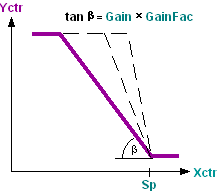
If Gain = 0, the controller exhibits two-point behavior. Two-point controller
Integral action time [Tn]
The I-portion of [Yctr] is calculated from the integral action time [Tn].
If [Tn] = 0, the controller exhibits P or PD control behavior. P/PD controllers
Derivative action time [Tv]
The D-portion of [Yctr] is calculated from the derivative action time [Tn].
If [Tv] = 0, the controller exhibits P or PI control behavior.
Neutral zone [Nz]
The neutral zone [Nz] represents the insensitive area of the controller around the setpoint.
If the absolute sum of the control difference is smaller than half the neutral zone [Sp]-[Xctr]<[Nz]/2, then (t1) the manipulated variable is tracked during 7 process cycles at controller output [Yctr]. Afterwards (t2), the controller output is constant until the control difference is outside the neutral zone. The controller output takes over again the manipulated variable calculated (t3).
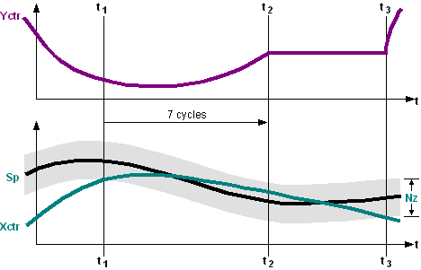
Control action [Actg]
[Actg] determines the relationship between the manipulated variable and the control variable.
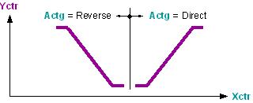
Direct acting: If the actual value [Xctr] increases, the controller output value [Yctr] increases, e.g. cooling, dehumidifying.
Reverse acting: If the actual value [Xctr] increases, the controller output value [Yctr] decreases, e.g. heating, humidifying.
Controller demand [DmdMod]
[DmdMod] determines response of controller demand.
[DmdMod] = Off | Controller demand [CtrDmd] = 0% |
[DmdMod] = 2-position | For calculated controller demand of 0%, [CtrDmd] = 0% gesetzt, otherwise 100%. |
[DmdMod] = continuous | Controller demand [CtrDmd] = 0..100% |
--- | For fault [ErSta] = Yes or override [OoServ] = On, [CtrDmd] is set to 0%. |
Calculate controller demand for switched-on PID controller:
If the PID controller is switched on via [EnFnct], the present controller demand is calculated dependent on the present controller output and the controller output range.
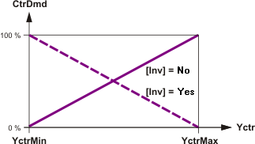
Calculate controller demand for switched-off PID controller:
If the PID controller is switched off via [EnFnct], the controller calculates a "virtual" demand dependent on the control error and controller settings. This demand corresponds the standardized P-ratio of the controller for "stand-alone" PID controller.
If the controller has 2-point response [Gain] = 0, demand is calculated for stand-alone PID controller as follows:
Actg | SP - Xctr | CTRDmd |
Reverse | <= 0 | 0% |
Reverse | > 0 | 100% |
Direct | >= 0 | 0% |
Direct | < 0 | 100% |
Virtual demand is corrects if the PID controllers is integrated in a sequence controller. A demand message should be coordinated with the other sequence elements. The following corrections are made:
- The controller acts indirectly ([Actg] = Reverse), a lower sequence element has the control release and controls actively: [CtrDmd] = 100%.
- The controller acts directly ([Actg] = Direct), a higher sequence element has the control release and controls actively: [CtrDmd] = 100%.
- The controller acts indirectly ([Actg] = Reverse), a higher indirectly acting sequence element has the control release and controls actively: [CtrDmd] = 0%.
- The controller acts directly ([Actg] = Direct), a lower directly acting sequence element has the control release and controls actively: [CtrDmd] = 0%.
Inversion [Inv]
[Inv] inverts the controller output signal [Yctr] according to the following formula: [Yctr]Inv = 100% - [Yctr]Old.
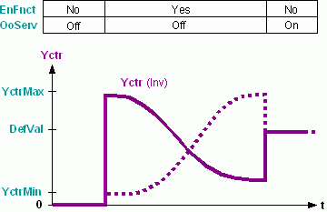
Limitation of the rise time [Ti0to100] or fall time [Ti100to0]
[Ti0to100], [Ti100to0] limit the maximum signal increase or signal decrease of the manipulated variable [Yctr].
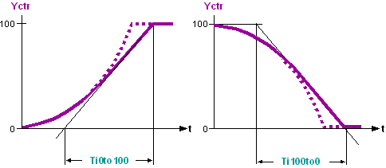
Limitation of the controller output [YctrMin], [YctrMax]
[YctrMin], [YctrMax] limits the controller output [Yctr]. Not effective for [OoServ] = 1 (On), if the controller is [YctrMin] ≥[YctrMax] for enabled [EnFnct] = 1 (Yes) and non-commanded [OoServ] = 0 (Off) controller, and [Yctr] = YctrMax and [CtrSta] = CntrCmd is set.
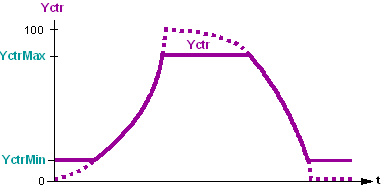
External tracking [Track]
Returning the effective manipulated variable improves the control quality of the PI or PID controller (e.g. anti windup). Application: Tracking.
[EnTrack] = 1 (Yes) | [Track] is processed as a tracking signal. Example: If a limitation controller acts directly on the actuating device (e.g., minim or maximum selection), the positioning signal of the controller no longer influences the control path. Returning the effective positioning signal to the tracking input keeps the controller on the present values and guarantees continued, modulating control when the limitation controller no longer intervenes. |
[EnTrack] = 0 (No) | [Yctr] is processed as a tracking signal. |
If external tracking is set for the controller element of a sequence, it must be ensured that the set limit values [YctrMin] and [YctrMax] can be reached. Else, the sequence controller can switch to the next sequence controller element only in the event of a high control error. As an alternative to external tracking, the limit values [YctrMin] and [YctrMax] can be influenced directly in the case of limitation applications.
Two-point controller (CtrMod=2-position, Hys).
If CtrMod = 2-position, the controller exhibits two-point behavior.
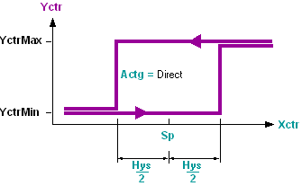
The switching difference equals the Hysteresis [Hys].
The direction of control action [Actg] determines the switching process.
The next lower or next higher sequence controller element is switched at [Sp] +/− [Hys].
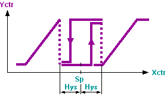
P/PD controllers
If [Tn] = 0, the controller exhibits P or PD control behavior.
Controller output offset [YctrOfs].
[YctrOfs] is added to the controller output [Yctr]. This moves the P-range of the P/PD controller so that the controller output [Yctr] = [YctrOfs] at setpoint [Sp]. Thus, a constant load is controlled at the operating point.
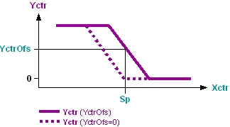
Functionality of the PID sequence controller
A sequence controller is used if several aggregates are used to control a controlled value in accordance with the predefined control sequence. The sequence controller switches the individual sequence controller elements according to the control sequences and coordinates control for the individual controller elements in a interrelated control behavior across all sequence controller elements or aggregates.
The functioning of the sequence controller comprises all processes that influence each other:
- Enabling or disabling a sequence controller
- Control process of the sequence controller
- Enabling/disabling/commanding an individual sequence controller element
- Control process of the individual sequence controller elements. The control process corresponds to that of a universal PID controller. Functioning of P, PI, PD, PID controllers
Enabling or disabling a sequence controller
The sequence controller is disabled by disabling [EnFnct] = 0 (No) or commanding [OoServ] = 1 (On) all sequence controller elements. If then a selection of sequence controller elements is enabled with properly parameterized control action ([EnFnct] = 1 (Yes) and [OoServ] = 0 (Off)), the sequence controller elements are initiated within this selection: The control process is started with that sequence controller element of the enabled selection that is closest to the control action changeover and that contains the control action for the respective situation determined by the present actual values and setpoints.
If the sequence control process is to be initiated by a particular sequence controller element, the corresponding sequence controller element must be enabled prior to all other elements; else, the above described process is used.
Control process of the sequence controller
The sequence controller switches control of the individual sequence controller elements via the controller token. Further signals to coordinate control of the sequence controller elements are necessary in addition to the controller token. The associated signals are exchanged via the pins [ToLower] and [FmHigher] and the pins [FmLower] and [ToHigher].
Step | Control process of the sequence controller |
--- | In each process cycle, the individual sequence controller elements independently determine the sequence controller element that carries out control (independent of the operating mode of the sequence controller). If a sequence controller element satisfies the following conditions, the controller token adopts [TknSta] =2 (CtrTkn).
|
1 | The sequence controller must be enabled. Enabling or disabling a sequence controller |
2 | The sequence controller element featuring the controller token controls the plant [Yctr]. All other sequence controller elements are constant. [TknSta] = 2 (CtrTkn) [CtrSta] = 3 (CtrOn) Exception: Enabling/disabling/commanding individual sequence controller elements |
3 | If the control range of the controlling sequence controller element is exhausted, [Yctr] > [YctrMax] or [Yctr] < [YctrMin], the controller token is passed on to the following sequence controller element (according to the operating sequence). [TknSta] = 1 (NoTkn) [CtrSta] = 4 (CtrMin) or 5 (CtrMax) Exception: Sequence controller elements with [EnFnct] = 0 (No) or [OoServ] = 1 (On) are not switched. |
--- | If all controller outputs of the enabled sequence elements are set to their limit values [CtlSta] = 4 (CtrMin) or [CtlSta] = 5 (CtrMax), the sequence controller element does not have a controller token. This may occur in different parameter settings of the sequence controller elements, e.g. within the energy-free zone due to different setpoints. |
Enabling/disabling/commanding an individual sequence controller element
The sequence controller considers the influence on control and integration if a sequence controller element is enabled, disabled, or commanded via its operating mode (e.g. via operator intervention).
If... | then... | ||
EnFnct | OoServ | Sequence controller element | Sequence controller |
0 (No) | 0 (Off) | The sequence controller element immediately sets the controller output [Yctr] = 0. | The sequence controller skips the sequence controller element in the operating sequence. If the controlling sequence controller element is disabled, the subsequent sequence controller element starts controlling. |
1 (Yes) | 0 (Off) | The sequence controller element checks if it was skipped by the sequence controller in the operating sequence. If the sequence controller element was skipped, its controller output [Yctr] increases to [Yctr] = YctrMax at speed Ti0to100. If the sequence controller element was not skipped, [Yctr] decreases to [Yctr] = YctrMin at speed Ti100to0. | The sequence controller adds the sequence controller element to the operating sequence. |
0 (No) or 1 (Yes) | 1 (On) | The sequence controller element immediately sets the controller output [Yctr] = DefVal. | The sequence controller skips the sequence controller element in the operating sequence. If the controlling sequence controller element is newly commanded, the subsequent sequence controller element starts controlling. |
Inputs
Pin | E | Description | |
EnFnct | p | Enable function. 1 (Yes): The controller is enabled. 0 (No): The controller is disabled. | |
OoServ | pa | Out of service. Commanding the controller output [Yctr]. | |
0 (Off) | Controller output [Yctr] is not commanded. | ||
1 (On) | Controller output [Yctr] and initialization value for I-portion are set to [DefVal]. The outputs [Yctrp], [Yctri], and [Yctrd] are set to 0. | ||
[Yctr] can be commanded. Note: If [DefVal] is interconnected, [Yctr] cannot be commanded. | |||
DefVal | pa | Command for controller output. Default value for [Yctr], if [OoServ] = 1 (On). | |
Sp | pa | Setpoint. Setpoint of the controlled variable. | |
Xctr | pa | Controller input. Actual value of the controlled variable (e.g. measured value). | |
GainFac | a | Gain factor. Variable gain factor to influence [Gain]. | |
Gain | pa | Gain. Gain of the control difference. Functioning: Gain [Gain] and gain factor [GainFac]. Engineering: Gain [Gain], [GainFac] | |
10.0 | Default value | ||
... | Setting/correction: Control behavior unstable: Decrease gain. Control behavior excessively stable: Increase gain. | ||
0.0 | The controller has a two-point response (two-point controller). Functioning: Neutral zone [Nz] | ||
Tn | pa | Integral action time. | |
0ms | The controller exhibits P or PD response. | ||
... | The controller exhibits P or PD response. | ||
Tv | pa | Derivative action time. | |
0ms | The controller exhibits P or PD response. | ||
... | The controller exhibits P or PD response. | ||
Nz | pa | Neutral zone. Width of the neutral zone around the setpoint. | |
Ti0to100 | pa | Rise time from 0 to 100%. Adjusting control to the plant, e.g., actuator runtime on opening. Functioning: Limitation of the rise time [Ti0to100] or fall time [Ti100to0]. | |
Ti100to0 | pa | Fall time from 100 to 0%. For example, actuator runtime on closing. | |
YctrMax | pa | Controller output maximum. Maximum limitation of [Yctr]. | |
YctrMin | pa | Controller output minimum. Minimum limitation of [Yctr]. Functioning: Limitation of the controller output [YctrMin], [YctrMax. | |
YctrOfs | pa | Controller output for offset
| |
0.0 | Default value | ||
... | If the operating point is reached, the controller output [Yctr] is ..... | ||
Actg | pa | Direction of control action [Actg] determines the dependence of the manipulated variable and the controlled variable. Functioning: Direction of control action. Note: Inversion of the controller output [Yctr] occurs with [Inv]. Sequence controller engineering: Parameterizing the sequence controller element. | |
0 (Direct) | Direct action such as cooling, dehumidifying. | ||
1 (Reverse) | Reverse action such as heating, humidifying. | ||
CtrMod | pa | Controller mode. | |
0 (Continuous) | The controller acts continuous (P(I)(D) controller) | ||
1 (2-position) | The controller acts 2-position (switching difference [Hys]). | ||
Hys | pa | Hysteresis The hysteresis stays for the switching difference of the 2-position controller ([CtrMod]=2-position) | |
DmdMod | pa | Demand type. | |
1 (Off) | The demand message is switched off, [CtrDmd] is set to 0%. | ||
2 (2-position) | For demand = 0%, [CtrDmd] = 0% is set, otherwise 100%. | ||
3 (Continuous) | The standard signal 0-100 is outputed to [CtrDmd]. | ||
Inv | pa | Inverse. | |
1 (Yes): Inversion of the controller output signal [Yctr]. | |||
0 (No): No inversion. | |||
EnTrack | pa | Tracking enable. External tracking is carried out (only in the case of PI and PID control response). | |
1 (Yes): [Track] is integrated in the control process. | |||
0 (No): No external tracking. | |||
Track | pa | Tracking. Input for the effective positioning value or the positioning feedback message. Application: Tracking. | |
FmHigher _Elements | pa | From higher neighbor. Engineering: Interconnecting sequence controller elements. | |
FmLower _Elements | pa | From lower neighbor. Engineering: Interconnecting sequence controller elements. | |
Outputs
Pin | E | Description | |
ErSta | a | Fault state. | |
0 (No) | No error has occurred; neither Hel_CSeq nor Cel_HSeq nor RTFault are equal to [TknSta]. | ||
1 (Yes) | Error has occurred; either Hel_CSeq or Cel_HSeq or RTFault are equal to [TknSta]. | ||
CtrSta | f | Controller state. Controller state of the controller or the sequence controller element. | |
1 (CtrOff) | The controller is switched off. | ||
2 (CtrCmd) | The controller does not control, but [Yctr] = DefVal. | ||
3 (CtrOn) | The controller is controlling actively [Yctr]. | ||
4 (CtrMin) | The controller is off [Yctr] = YctrMin. | ||
5 (CtrMax) | The controller is off [Yctr] = YctrMax. | ||
TknSta | a | Token state. Token state of the sequence controller element. | |
1 (NoTkn) | The sequence controller element has no token. | ||
2 (CtrTkn) | The sequence controller element has a controller token. | ||
3 (IntgTkn) | The sequence controller element has an integrator token. | ||
4 (BothTkns) | The sequence controller element has a both an integrator token and a controller token. | ||
5 (Hel_CSeq) | The sequence controller element features an incorrect direction of control action, e.g., heating sequence in the cooling sequence. | ||
6 (Cel_Hseq) | The sequence controller element features an incorrect direction of control action, e.g., cooling sequence in the heating sequence. | ||
7 (RTFault) | Error in the sequence controller element. | ||
Yctr | a | Controller output. | |
CtrDmd | a | Controller demand. Call for output generated by the system, in percent. | |
ToHigher _Elements | a | To higher neighbor. Engineering: Interconnecting sequence controller elements. | |
ToLower _Elements | a | To lower neighbor. Engineering: Interconnecting sequence controller elements. | |
Yctrp | a | Controller output proportional part. If [TknSta] = CntrTkn, [Yctrp] shows the P-portion. Not influenced by [Inv], [Ti0to100], [Ti100to0], [YctrMin], [YctrMax], [YctrOfs]. | |
Yctri | a | Controller output integral part. If [TknSta] = CntrTkn, [Yctri] shows the I-portion. Not influenced by [Inv]. | |
Yctrd | a | Controller output derivative part. If [TknSta] = CntrTkn, [Yctrd] shows the D-portion. Not influenced by [Inv], [Ti0to100], [Ti100to0], [YctrMin], [YctrMax]. | |
Input values
Pin | Description | Data type | Default value | E.g. Engineering unit or Text group | Min. | Max. |
EnFnct | Enable function | Boolean | 1 (Yes) | No, Yes |
|
|
OoServ | Out of service | Boolean | 0 (Off) | Off, On |
|
|
DefVal | Default value | Real | 0.0 | % | 0.0 | 100.0 |
Sp | Setpoint | Real | 20.0 | °C | -50.0 | 150.0 |
68.0 | °F | -58.0 | 302.0 | |||
Xctr | Controller input | Real | 20.0 | °C | -50.0 | 150.0 |
68.0 | °F | -58.0 | 302.0 | |||
GainFac | Gain factor | Real. | 1.0 | - - - | -3.403E38 | 3.403E38 |
Gain | Gain | Real | 10.0 | %/K | 0.0 | 3.403E38 |
5.5 | %/°F | 0.0 | 3.403E38 | |||
Tn | Integral action time Tn | Time | 2m | T#0d_0h_0m_0s_0ms |
|
|
Tv | Derivative action time Tv | Time | 0ms | T#0d_0h_0m_0s_0ms |
|
|
Nz | Neutral zone | Real | 0.5 | K | 0.0 | 10.0 |
1.0 | °F | 0.0 | 18.0 | |||
Ti0to100 ... | Rise time from 0 to 100% | Time | 1m | T#0d_0h_0m_0s_0ms |
|
|
Ti100to0 | Fall time from 100 to 0% | Time | 1m | T#0d_0h_0m_0s_0ms |
|
|
YctrMax | Controller output maximum | Real | 100.0 | % | 0.0 | 100.0 |
YctrMin | Controller output minimum | Real | 0.0 | % | 0.0 | 100.0 |
YctrOfs | Controller output for offset | Real | 0.0 | % | 0.0 | 100.0 |
Actg | Direction of control action | Boolean | 1 (Reverse) | Direct, Reverse |
|
|
CtrMod | Controller mode | Boolean | 0 (Continuous) | Continuous /2-position |
|
|
Hys | Hysteresis | Real | 1.0 | K | -3.403E38 | 3.403E38 |
2.0 | °F | -3.403E38 | 3.403E38 | |||
DmdMod | Demand mode | Multistate | 2 (2-position) | Demand mode | 1 | 3 |
Inv | Inverse | Boolean | 0 (No) | No, Yes |
|
|
EnTrack | Tracking enable | Boolean | 0 (No) | No, Yes |
|
|
Track | Tracking | Real | 0.0 | % | 0.0 | 100.0 |
FmHigher | From higher neighbor | Struct |
|
|
|
|
FmLower | From lower neighbor | Struct |
|
|
|
|
Output values
Pin | Description | Data type | Default value | E.g. Engineering unit or Text group | Min. | Max. |
ErSta | Fault state | Boolean | 0 (No) | No, Yes |
|
|
CtrSta | Controller state | Multistate | 1 (CtrOff) | Controller state | 1 (CtrOff) | 5 (CtrMax) |
TknSta | Token state | Multistate | 1 (NoTkn) | TokenHere | 1 (NoTkn) | 7 (RTFault) |
Yctr | Controller output | Real | 0.0 | % | 0.0 | 100.0 |
CtrDmd | Controller demand | Real | 0.0 | % | 0.0 | 100.0 |
ToHigher | To higher neighbor | Struct |
|
|
|
|
ToLower | To lower neighbor | Struct |
|
|
|
|
Yctrp | Controller output proportional part | Real | 0.0 | % | -3.403E38 | 3.403E38 |
Yctri | Controller output integral part | Real | 0.0 | % | -3.403E38 | 3.403E38 |
Yctrd | Controller output derivative part | Real | 0.0 | % | -3.403E38 | 3.403E38 |
Engineering – PID controller
The control response of the PID controller is formed through parameterization of an individual PID_CTR block. Each sequence controller element of a sequence controller is parameterized in the same way.
Parameterize control response
| P | PI | PD | PID | 2-Pt |
Gain | X | X | X | X | Gain = 0 |
Tn | Tn = 0 | X | Tn = 0 | X | --- |
Tv | Tv = 0 | Tv = 0 | X | X | --- |
Nz | X | X | X | X | X (Spec.) |
Ti0to100 ... | X | X | X | X | --- |
YctrMin ... | X | X | X | X | --- |
YctrOfs | X | O | X | O | --- |
Actg | X | X | X | X | X |
Inv | X | X | X | X | X |
Track | --- | X | --- | X | --- |
X = Relevant for control response. | O = Has influence on initialization. | --- = Has no influence | |||
Gain [Gain], [GainFac]
Calculations of [Gain] from the P-band (Xp):
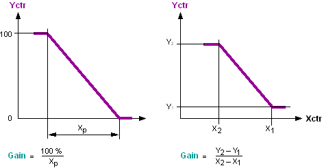
[Gain] = Positioning range / P-range
[Gain] can be influenced during operation. For example, in an energy recovery controller sequence, [GainFac] is interconnected to the "gain scheduling" block FB124 ADAGAIN.
The gain [Gain] is also called gain factor KR or "transfer by-value of the P-controller".
Setting values for gain.
Typical setting values for gain [Gain] and integral action time [Tn].
Ventilation / air conditioning
Controlled path Actuating location to measuring location. | Controlled variable | Unit | Gain [%/K] | Tn [s] |
|---|---|---|---|---|
Air mixer Mixing dampers -- temperature sensor. | Mixed air temperature. | °C | 5 | 00:02:00 |
°F | 2.8 | |||
Heating register water Positioning valve -- supply air temperature sensor. | Supply air temperature. | °C | 5 | 00:03:00 |
°F | 2.8 | |||
Heating register water Positioning valve -- room temperature sensor. | Room temperature. | °C | 20 | 00:30:00 |
°F | 11.2 | |||
Electrical register Positioning unit -- supply air temperature sensor. | Supply air temperature. | °C | 5 | 00:02:00 |
°F | 2.8 | |||
Cooling register water Positioning valve -- supply air temperature sensor. | Supply air temperature. | °C | 5 | 00:02:00 |
°F | 2.8 | |||
Cooling register water Positioning valve -- room temperature sensor. | Room temperature. | °C | 20 | 00:30:00 |
°F | 11.2 | |||
Air washers Positioning unit -- supply air temperature sensor (cooling). | Supply air temperature. | °C | 10 | 00:02:00 |
°F | 5.6 | |||
Air washers Positioning unit -- supply air humidity sensor. | Supply air humidity. | %RH | 5 | 00:03:00 |
Steam humidifier Positioning unit -- supply air humidity sensor. | Supply air humidity. | %RH | 5 | 00:3:00 |
Supply air room temperature (cascade) Supply air temperature setpoint – room air temperature sensor setpoint. | Room temperature. | °C | 1 | 00:30:00 |
°F | 0.6 | |||
Supply air room air humidity (cascade) Supply air humidity setpoint – room air humidity sensor. | Room air humidity. | %RH | 5 | 00:10:00 |
Heating
Controlled path Actuating location to measuring location. | Controlled variable | Unit | Gain [%/K] | Tn [s] |
|---|---|---|---|---|
Mixing circuit Mixing valve -- mixing temperature sensor. | Flow temperature. | °C | 3 | 00:02:00 |
°F | 1.7 | |||
Mixing circuit Positioning valve -- return temperature sensor (via radiator, floor heating. | Return temperature. | °C | 3 | 00:10:00 |
°F | 1.7 | |||
Heat exchanger (water/water) Actuating valve primary -- sensor on secondary exit. | Water discharge temperature. | °C | 5 | 00:05:00 |
°F | 2.8 | |||
Fast domestic hot water path Actuating valve to measuring sensor (mixer or heat exchanger) | Domestic hot water temperature. | °C | 75 | 00:00:30 |
°F | 41.7 | |||
Room controlled path Radiator valve -- room air sensor. | Room temperature. | °C | 25 | 00:20:00 |
°F | 13.9 | |||
Room controlled path Positioning valve floor heating -- room sensor. | Room temperature. | °C | 25 | 00:40:00 |
°F | 13.9 | |||
Boiler Burner boiler sensor. | Boiler temperature. | °C | 10 | 00:03:00 |
°F | 5.6 | |||
Neutral zone [Nz]
Limitation of the rise time [Ti0to100] or fall time [Ti100to0]
Limitation of the controller output [YctrMin], [YctrMax]
Controller output offset [YctrOfs]
Two-point controller (CtrMod=2-position, Hys)
Engineering – PID sequence controller
The sequence controller is formed by interconnecting and parameterizing PID_CTR blocks (sequence controller elements). The sequence controller's functionality is generated automatically (via information channels). The sequence of the individual aggregates is determined by the interconnection sequence of the PID_CTR blocks.
Engineering comprises the following steps:
Step | Procedure |
1 | Determining the order of the sequence controller elements |
2 | Interconnecting sequence controller elements |
3 | Parameterizing the sequence controller element
|
4 | Setting/tuning the sequence controller |
Determining the order of the sequence controller elements
As a rule, the sequence controller consists of individual PID_CTR blocks. Each PID_CTR acts as a sequence controller element for an aggregate.
The interconnection sequence of the PID_CTR blocks (from low to high) corresponds to the order of the control sequences (1..n) of the sequence controller. The planned operating range (e.g. heating) and the switching sequence must be considered accordingly when interconnecting the [PID_CTR].
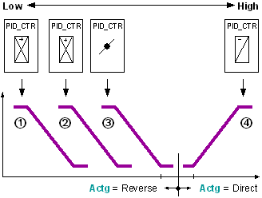
For example aggregates: 1 = Air dampers, 2 = Preheater, 3 = Reheater, 4 = Cooler.
Control sequence for heating: 1 ---> 2 ---> 3.
Control sequence for cooling: 4 ---> ....
- The lowest sequence controller element corresponds to control sequence 1, the highest to control sequence n.
- The lowest sequence controller element controls an aggregate using reverse action (if available).
Interconnecting sequence controller elements
There are two ways to interconnect the PID_CTR blocks with a sequence controller:
1.) Direct interconnection
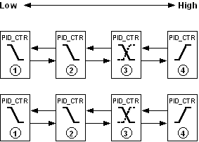
The individual PID_CTR blocks are interconnected with each other.
Interconnection is made between the pins [ToLower] and [FmHigher] and the pins [FmLower] and [ToHigher].
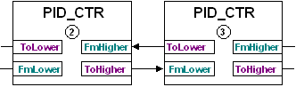
This type of interconnection is used if the PID_CTR blocks are located on the same chart.
2.) Interconnection to SEQLINK
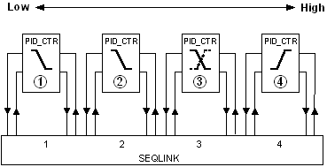
The individual PID_CTR blocks are interconnected via the SEQLINK block.
Interconnection occurs between the pins for block PID_CTR and a place on the SEQLINK block. The sequence of PID_CTR must match the order of the places. However, free places are possible on the SEQLINK. Several SEQLINKs can be interconnected in series.
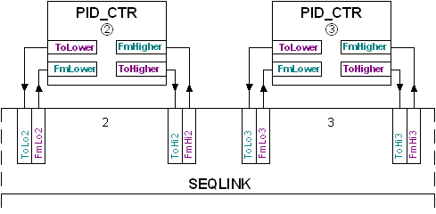
This type of interconnection is used if the PID_CTR blocks are located on different charts or if the individual sequence controller elements or aggregates may not be interconnected (CAS library).
Important: The sequence controller elements must be parameterized in accordance with the interconnection.
The pins [ToLower] and [FmHigher], [FmLower] and [ToHigher] are interconnected only on a sequence controller. In this case, the following information is transported:
Pin | Description | |
_CtlMod | Control mode Multistate Operating mode of the sequence controller. | |
1 (Inactive) Default | Pin is not interconnected. | |
2 (Act) | Sequence controller is active. | |
3 (Off) | The sequence controller is disabled. | |
4 (On) | The sequence controller is enabled. | |
_Crdn | Coordination. Multistate Coordination signal of the sequence controller. | |
1 (Nil) Default | Pin is not interconnected (border element). | |
2 (Link) | The sequence controller was interconnected via SEQLINK. | |
3 (Low) | [YctrMin] side of the sequence controller element. | |
4 (ErrLow) | Error in the sequence interconnection. | |
5 (Act) | Sequence controller is active. | |
6 (High) | [YctrMax] side of the sequence controller element. | |
_Ctkn | Controller token. Multistate Controller enable. | |
1 (Nil) Default | Pin is not interconnected (border element). | |
2 (Link) | The sequence controller was interconnected via SEQLINK. | |
3 (Low) | [YctrMin] side of the sequence controller element. | |
4 (ErrLow) | Error in the sequence interconnection. | |
5 (Act) | Sequence controller is active. | |
6 (High) | [YctrMax] side of the sequence controller element. | |
_IsInt | Integrator state signal. Boolean Information on the integrating action of the sequence controller element. | |
0 (No) Default | Non-integrating sequence controller element. | |
1 (Yes) | Integrating sequence controller element. | |
_DeltaE | Covered control error of the proportional part. Real Default value = 0.0 | |
Parameterizing the sequence controller element' control action
The set operating range (e.g. heating, cooling) determines the direction of control action [Actg] for a sequence controller element. Direction of control action changeover during operation is possible (e.g. energy recovery). If aggregate control demands an inverted signal, inversion [Inv] of the controller output [Yctr] helps solve this problem.
In the sequence controller, the direction of control action must feature the following response:
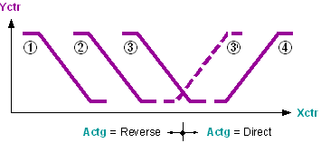
- The first or lowest sequence controller elements have reverse direction for control action [Actg] = 1 (Reverse).
- The last or highest sequence controller elements have direct direction of control action [Actg] = Direct.
- A sequence controller element with changing direction of control action (e.g. energy recovery) can only be in between.
Deviations generate an error signal [ErSta] = 1 (Yes). Troubleshooting
Parameterizing setpoints and an energy-free zone
In the sequence controller, the setpoints [Sp] of the sequence controller elements (1...n) must increase monotonously:
[Sp]1≤ [Sp]2≤ [Sp]3≤ ... ≤ [Sp]n
Modulating control on transition from one control sequence to another is ensured if the control sequences with the same direction of control action have the same setpoint.
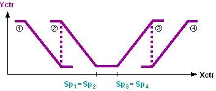
The energy-free zone is defined by the setpoints on changeover of the direction of control action (e.g. heating setpoint, cooling setpoint).
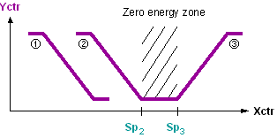
Application
Notes on applying the individual functions of the PID_CTR block:
- PID controller, PID sequence controller
- Neutral zone [Nz]
- Gain factor [GainFac]
- Positioning time of the plant
- Tracking [Track]
- Inverting the controller output [Inv]
- Controller output offset [YctrOfs].
- Reset PID controller, PID sequence controller
PID controller.
The PID controller with tracking input represents a universal controller for use in ventilating, heating, and air conditioning plants. It is used to control any controlled variable, e.g., for the following applications:
- Control with special limitations.
- Control of actuating devices with significant dynamic, e.g., actuating motors with position feedback signal.
PID sequence controller
PID sequence controllers are primarily used in ventilation and air conditioning plants to control temperature and humidity. The air states are reached by a sequential control and switching procedure via several plant elements, whereby each controlled variable (temperature, humidity) requires its own sequence controller.
General side applications such as heating plants are also possible.
Neutral zone [Nz]
The neutral zone serves to reduce the control commands after reaching the operating point. With a small control difference, the output signal remains constant.
Gain factor [GainFac]
The control gain can be changed during operation by gain factor [GainFac]. For example, this is meaningful for energy recovery sequence control to control the outside air dampers, as the damper positioning depends on the outdoor air temperature.
Inverting the controller output [Inv]
For sequence controllers, the controller output signal can be inverted without influencing the direction of control action. For example, if a sequence controller element in the control sequence must be parameterized with a direct action (due to the operating sequence), but the plant expects an inverted positioning signal.
Positioning time of the plant
The maximum rise time or fall time of the positioning signal can be adjusted to the plant, e.g., the runtime of the actuator on opening or the positioning time of the valve on opening. This improves the quality of control.
Controller output for offset.
The controller output for offset allows for setting the operating point at a constant load for P and PD controllers. With PI and PID controllers, the integrator value is initialized with the offset value during startup (transition of operating mode 'Off' > operating mode 'On').
Tracking
Tracking is used to improve the control quality (e.g. anti-windup), for example, in the following cases:
- If a limitation controller acts directly on the actuating device (e.g., minim or maximum selection), the positioning signal of the controller no longer influences the control path. Returning the effective positioning signal to the tracking input keeps the controller on the present values and guarantees continued, modulating control when the limitation controller no longer intervenes.
- If an actuator has a position feedback signal, the signal can be sent directly to the controller on the tracking input.
- Within the sequence, external tracking must not be used for limitation applications (e.g. use of limitation controllers). As an alternative to external tracking, the limit values [YctrMin] and [YctrMax] can be influenced directly in the case of limitation applications.
Reset of PID controller or PID sequence controller
Controller type | Type of reset | Procedure |
PID controller | Full reset | Default: Integrator value=0. Set [EnFnct] to 0 (No). Then reset [EnFnct] to 1 (Yes). or Set [FmLower.CtlMod] to 1 (Inactive). Then reset [FmLower.CtlMod] to 4 (On). |
Default: Integrator value=DefVal. Set [OoServ] = 1 (On). Then reset [OoServ] to 0 (Off). | ||
Integrator value reset | Set [Tn] to "0". Then reset [Tn] to old value. | |
PID sequence controller | Full reset | Set all [EnFnct] to 0 (No). Then reset all [EnFnct] to 1 (Yes). or Set all [OoServ] to 1 (On). Then reset all [OoServ] to 0 (Off). or Set [FmLower.CtlMod] to 1 (Inactive) at lowest sequence controller element. Then reset [FmLower.CtlMod] to 4 (On). |
Process response
During controller initialization, the controller output is set to value YctrMin. After initialization is complete, the function is stopped for about 3 cycles. This neutralizes an unfavorable processing order. Afterwards, the function is performed by utilizing the values at the inputs.
In the sequence controller, each individual sequence control element is initialized individually so that the controller token arrives at the correct sequence controller element only after a few cycles and the control is available.
Troubleshooting
The direction of control action is parameterized incorrectly
Within a sequence, the control action from the lowest to the highest sequence controller element can be changed only once and only from reverse to direct acting. If this requirement is not met, i.e. if the control action is parameterized incorrectly, faulty control sequences are deactivated and the next valid control sequence is released. The incorrectly parameterized sequence controller elements set [ErSta] = 1 (Yes). | |
[TknSta] = CEL_HSEQ | Cooling element in the heating sequence. The deactivated sequence controller element has a direct control action. |
[TknSta] = HEL_CSEQ | Heating element in the cooling sequence. The deactivated sequence controller element has a reverse control action. |
Examples for incorrectly configured sequence controller elements
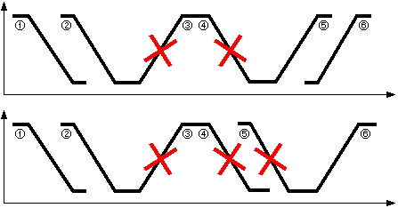
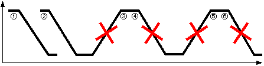
Troubleshooting
The pins [Yctrp], [Yctri], and [Yctrd] help monitor the control response. Inactive sequence controller elements have [Yctrp] = [Yctri] = [Yctrd] = 0.
P-portion [Yctrp]
[Yctrp] is the P-portion of [Yctr] and is calculated from [Gain] x [GainFac].
If the controller gain is high, [Yctrp] changes faster on small control error changes.
[Yctrp] is not influenced by [Inv], [Ti0to100], [Ti100to0], [YctrMin], [YctrMax], and [YctrOfs].
I-portion [Yctri]
[Yctri] is the I-portion of [Yctr] and is calculated from the integral action time [Tn].
Initialization for integrating controllers: | Operating mode 'Off' > operating mode 'On' | [Yctri] = YctrOfs |
| Operating mode 'Command' > operating mode 'On' | [Yctri] = DefVal |
[YCtri] is not influenced by [Inv].
D-portion [Yctrd]
[Yctrd] is the D-portion of [Yctr] and is calculated from the derivative action time [Tn].
[Yctrd] is not influenced by [Inv], [Ti0to100], [Ti100to0], [YctrMin], and [YctrMax].